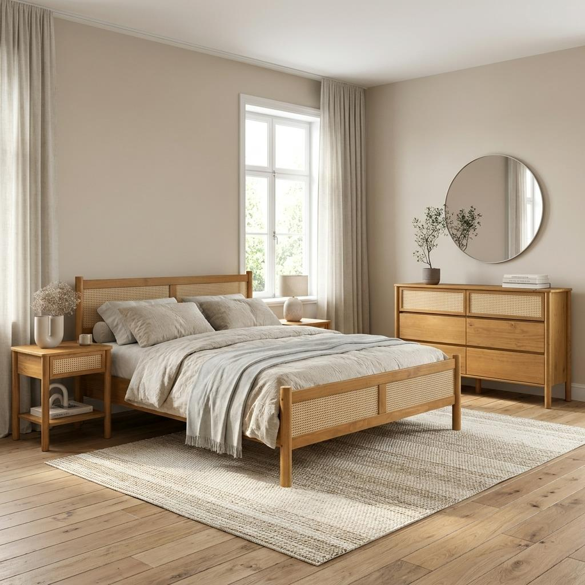
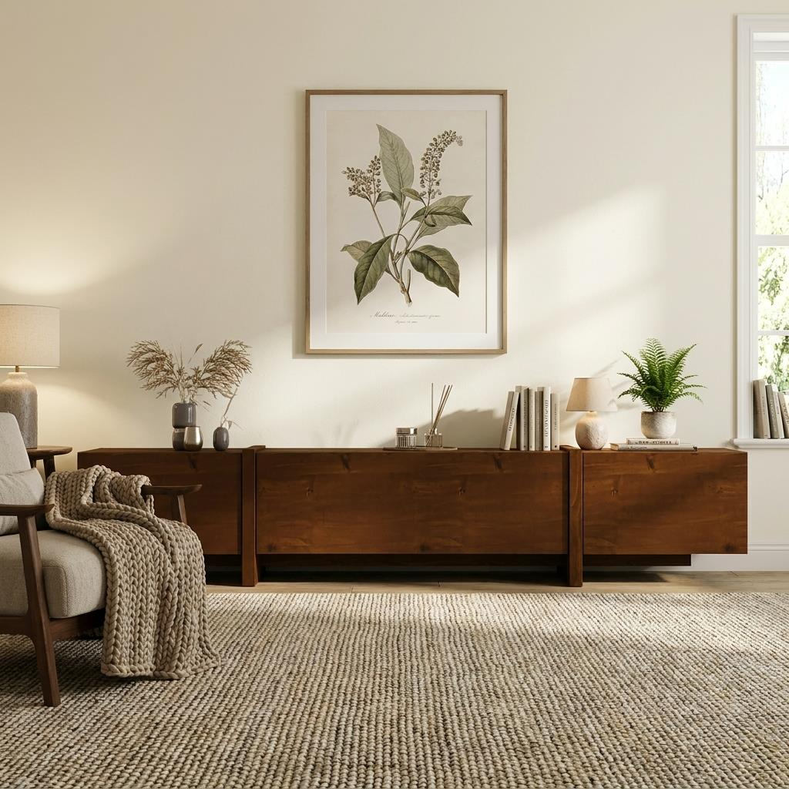
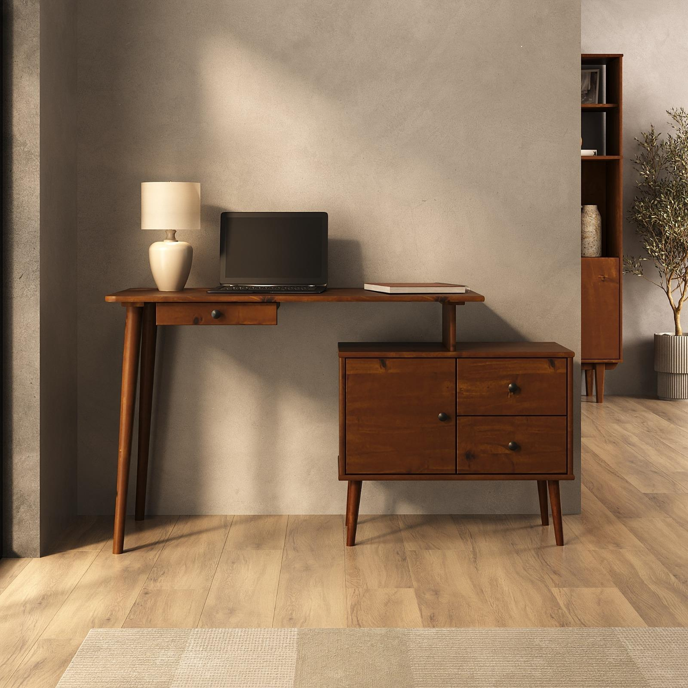
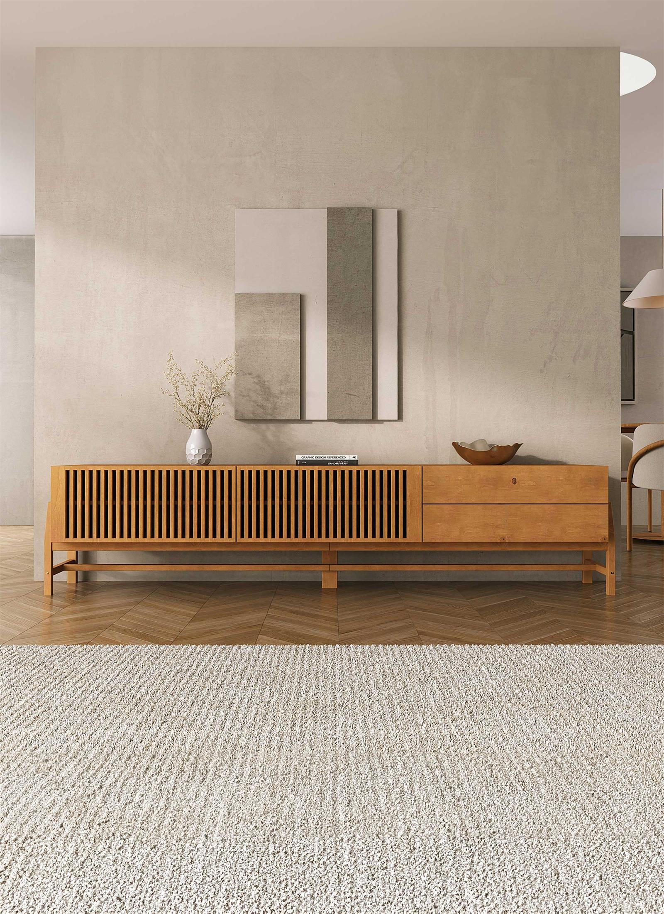
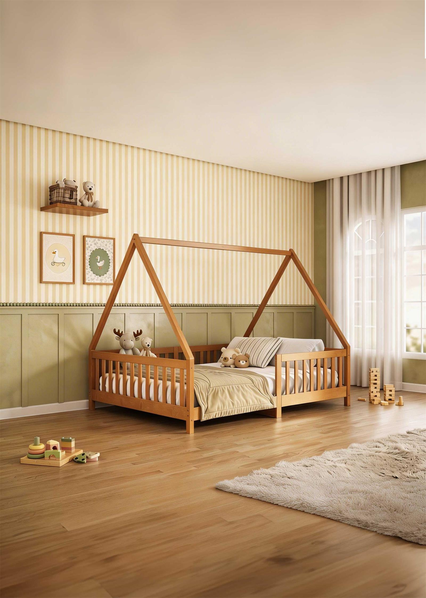
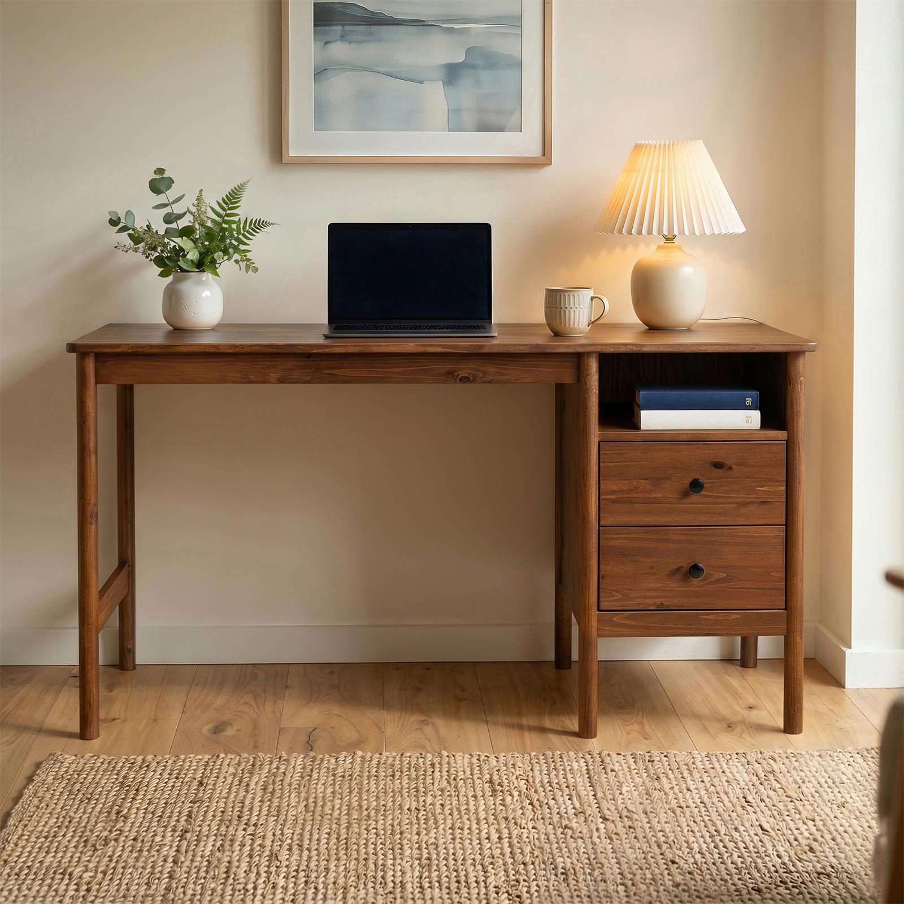
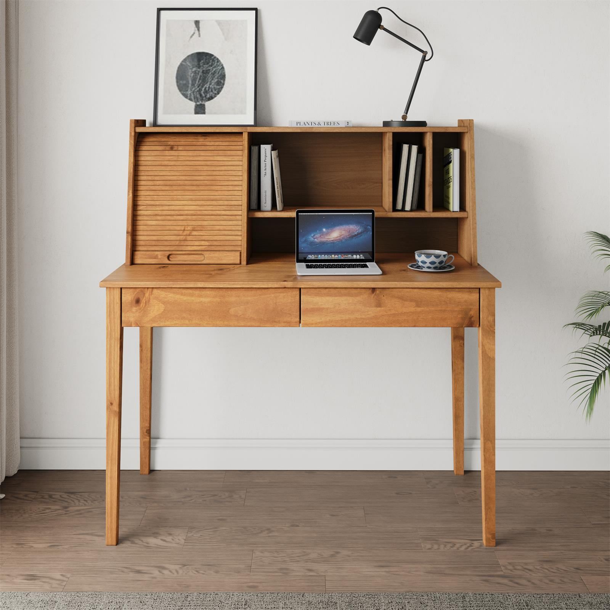
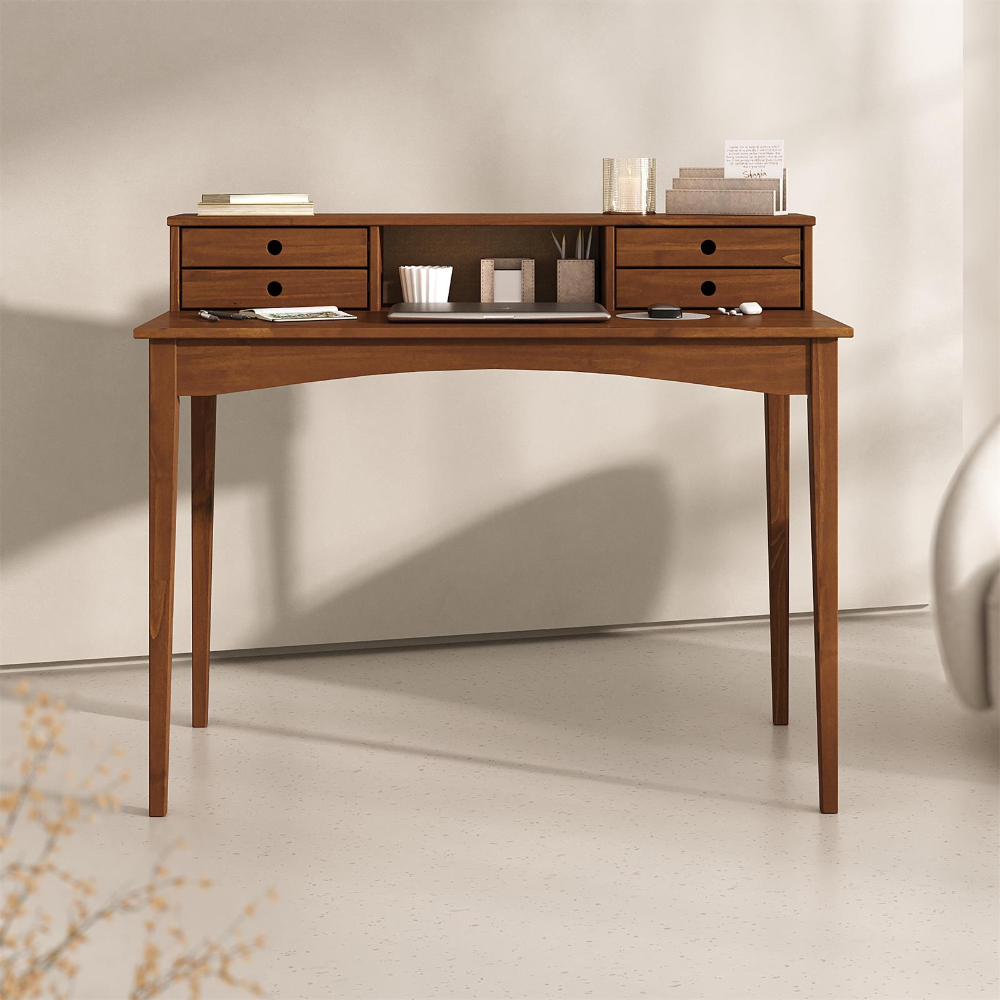
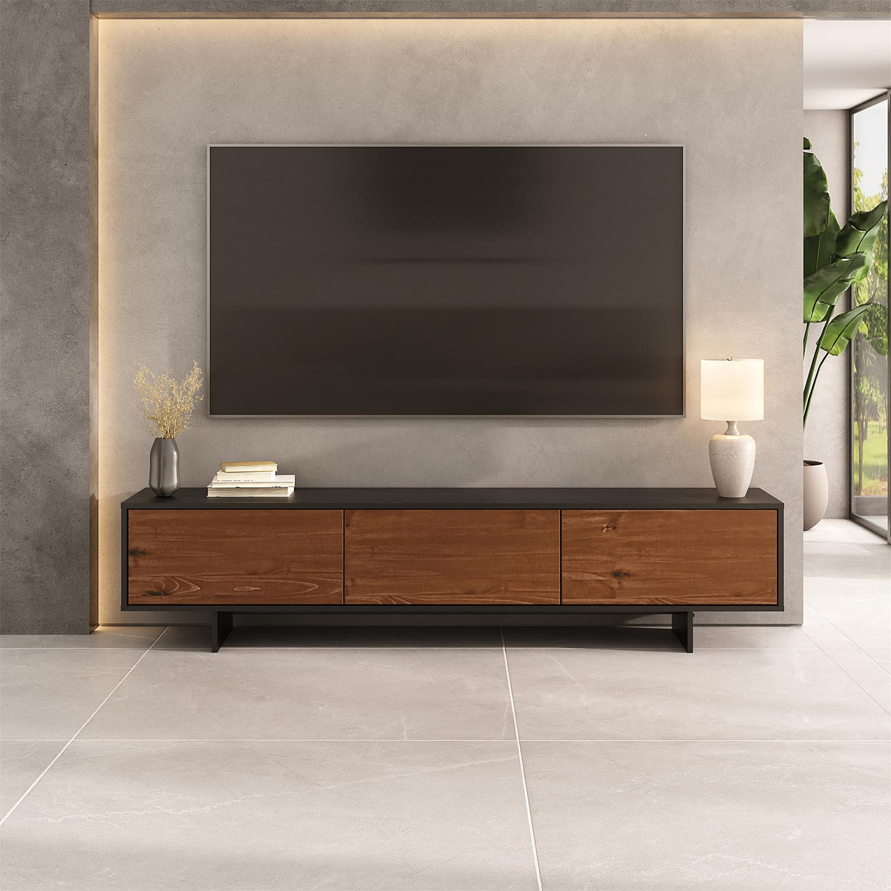
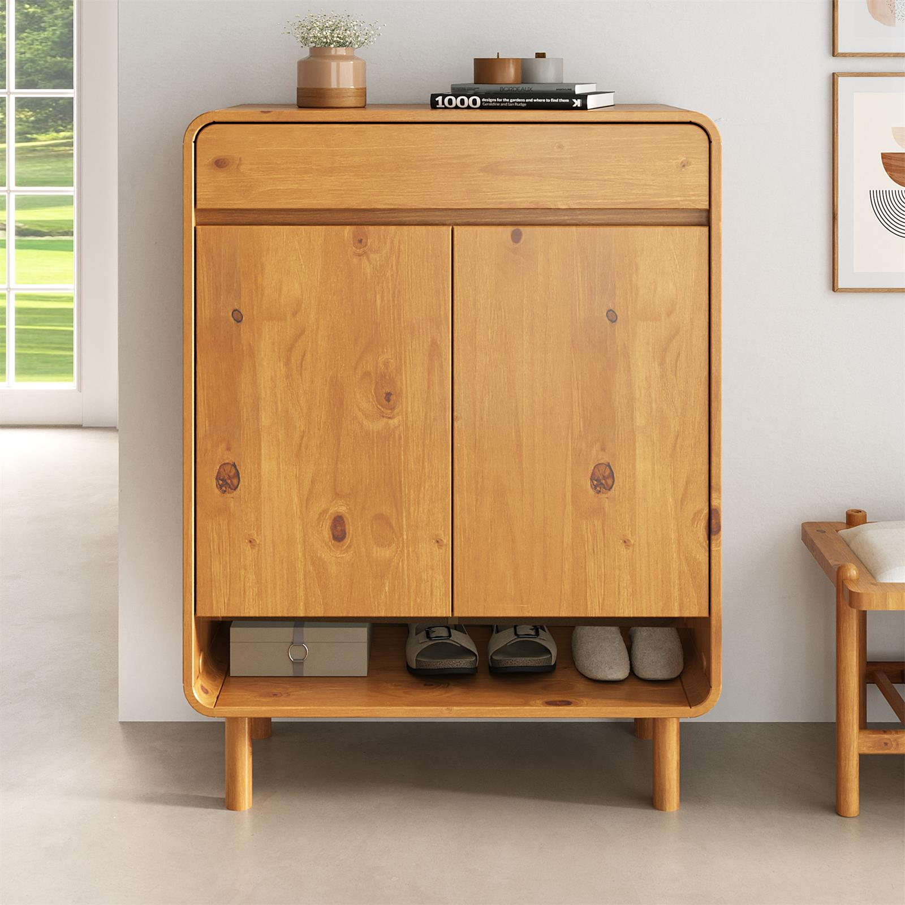

Artigos
Guias para escolher móveis com mais segurança.
Conteúdos sobre madeira, medidas, ambientes, cuidados e decisões que tornam a compra mais clara.

Como escolher móveis de madeira maciça de pinus para sua casa
Veja o que observar antes da compra para criar ambientes mais acolhedores, funcionais e feitos para durar.
Continuar lendo
Madeira maciça de pinus: entenda resistência, durabilidade e cuidados
Um guia direto para conhecer melhor o pinus, suas características e os cuidados que ajudam o móvel a permanecer bonito.
Continuar lendo
Como medir o ambiente antes de comprar um móvel online
Veja como observar circulação, parede, portas, tomadas e proporções para comprar com mais segurança e menos improviso.
Continuar lendo
Como escolher uma cômoda para quarto adulto
Uma leitura para comparar tamanho, gavetas, função e presença visual antes de escolher uma cômoda para o quarto.
Continuar lendo
Como escolher um rack para sala de TV
Altura, comprimento, armazenamento e composição: os pontos que deixam a sala mais equilibrada e funcional.
Continuar lendo
Quarto Montessori: como criar um ambiente seguro e funcional
Ideias para pensar autonomia, segurança, circulação e escolhas de móveis em um quarto infantil mais acolhedor.
Continuar lendo
Como cuidar de móveis de madeira maciça no dia a dia
Limpeza, umidade, sol e uso correto: cuidados simples para conservar móveis de madeira maciça no dia a dia.
Continuar lendoComo escolher uma cama de madeira maciça
Tamanho, estrutura, estrado e acabamento: critérios para escolher uma cama de madeira maciça com mais segurança.
Continuar lendo
Como reconhecer design durável em móveis de madeira
Proporção, função e materialidade como critérios para móveis que permanecem relevantes ao longo do tempo.
Continuar lendo
O que diferencia madeira maciça em uma operação industrial
Como seleção, controle de processo, acabamento e padronização influenciam a qualidade final do móvel.
Continuar lendo
Por que o controle de processo define a qualidade final
Processos padronizados, dados e disciplina industrial como base para consistência em móveis de madeira.
Continuar lendo
Durabilidade também é uma escolha sustentável
Por que móveis duráveis, reparáveis e bem produzidos reduzem desperdício e ampliam valor de uso.
Continuar lendo